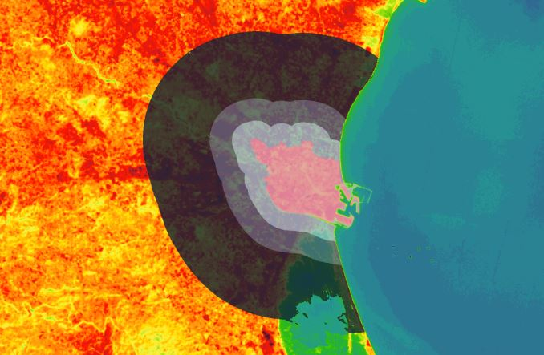
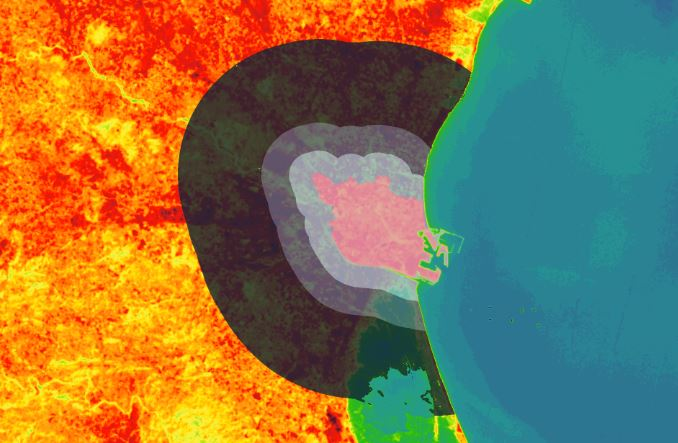
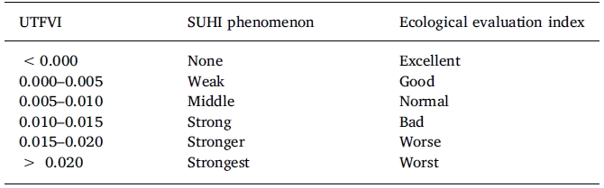
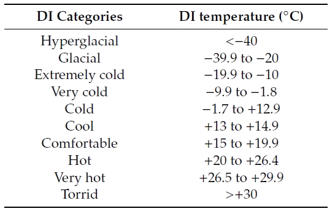

Surface Urban Heat Island (SUHI)
Cuando se monitoriza la isla de calor urbana a partir de datos de teledetección, se habla de Isla de Calor Urbana Superficial (Surface Urban Heat Island, SUHI), debido a que el parámetro utilizado es la temperatura de superficie terrestre (Land Surface Temperature, LST). La metodología seguida para obtener los valores de SUHI aqui reportados ha sido la propuesta por Sobrino & Irakulis (2020) 1. De esta forma, se ha estimado SUHIMAX y SUHIMEAN, que se definen como las diferencias térmicas entre el LST máximo y medio de la zona urbana y el LST de su entorno.
Para definir el área urbana se ha utilizado los límites territoriales proporcionados por el Instituto Geográfico Nacional (IGN), mentras en el caso de las zonas circundantes se han definido tres áreas diferentes, la adyacente urbana (Su), la futura adyacente (Sf) y la periurbana (Sp). El ancho (WU, Wf y WP) de la zona de influencia para cada entorno se calcula de la siguiente manera:
donde A es el área de la aglomeración urbana y Awu es la suma de las áreas A y Su.
 

Representación del concepto de definición de límites (izquierda) y ejemplo en el caso de Valencia (derecha)
Urban Thermal Field Variance Index (UFTVI)
El Urban Thermal Field Variance Index, o UFTVI, es el índice más utilizado para la evaluación ecológica de ambientes urbanos, por su relación directa con el LST. Este index considera el impacto térmico de las diferentes subáreas (nivel de distrito) en el área de aglomeración urbana1 y permite un análisis cuantitativo del efecto Isla de Calor Urbano, a través de la relación:
De esta forma, el índice UFTVI nos permite analizar el impacto térmico en cada zona del casco urbano. El índice se divide en seis niveles con seis índices de evaluación ecológica específicos 2, que van desde excelente (cuando el efecto SUHI es menospreciable) hasta peor (cuando el efecto SUHI es más fuerte).
Categorización del índice de evaluación ecológica

Ejemplo del índice UFTVI en el caso de Valencia
Urban Heat Island Intensity Index (UHIER)
El UHIER es la intensidad SUHI, obtenida a partir de una relación con la diferencia de temperatura superficial entre áreas urbanas y áreas circundantes 3, que se puede estimar como:
Con esto, la intensidad de SUHI se puede clasificar en cinco niveles, como se muestra en la siguiente tabla.
Categorización del UHIER

Discomfort Index (DI)
El índice de malestar (DI) es una medida de la sensación de calor humano para diferentes condiciones climáticas. Permite analizar el impacto bioclimático a partir de una relación entre la humedad relativa (RH) en percentaje y la temperatura de superficie terrestre1, en ˚C. La humedad relativa se ha obtenido con el producto de ERA5.
Este índice se divide en diez categorías, que van desde hiperglacial hasta tórrido. En el caso de Valencia, toda la comarca urbana tiene un índice de malestar correspondiente a la clase "very hot".
Categorización del índice de malestar
Urban Hot Spots (UHS)
Los Urban Hot Spots (UHS) son las regiones más calientes de un área urbana 4. Un píxel se considera un punto caliente urbano si su temperatura está por encima de dos desviaciones estándar (σ) del valor medio de la escena.
Ejemplo de Urban Hot Spots en el caso de Valencia
Referencias
1. Sobrino, J. A., & Irakulis, I. (2020). A Methodology for Comparing the Surface Urban Heat Island in Selected Urban Agglomerations Around the World from Sentinel-3 SLSTR Data. Remote Sensing, 12(12), 2052. 
2. Liu, L., & Zhang, Y. (2011). Urban Heat Island Analysis Using the Landsat TM Data and ASTER Data: A Case Study in Hong Kong. Remote Sensing, 3(7), 1535-1552.
3. Huang, Q., Huang, J., Yang, X., Fang, C., & Liang, Y. (2019). Quantifying the seasonal contribution of coupling urban land use types on Urban Heat Island using Land Contribution Index: A case study in Wuhan, China. Sustainable Cities and Society, 44, 666-675.
4. Portela, C. I., Massi, K. G., Rodrigues, T., & Alcântara, E. (2020). Impact of urban and industrial features on land surface temperature: Evidences from satellite thermal indices. Sustainable Cities and Society, 56, 102100.